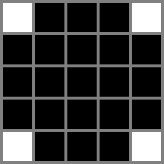
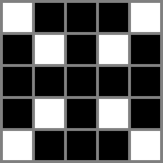
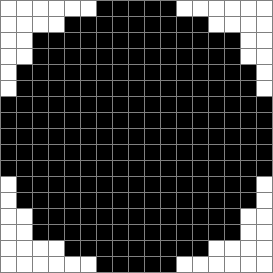

Typical computer images are matrices of pixels, with each pixel being a small square of a specific color. Drawing lines that are not perfectly parallel to the axes of the pixel matrix results in imperfections. Drawing circles is an extreme example where those imperfections arise.
Suppose we have a picture consisting
of $$$2\mathbf{R}+1$$$ by $$$2\mathbf{R}+1$$$ pixels, and we number the rows and columns of pixels between
$$$-\mathbf{R}$$$ and $$$\mathbf{R}$$$, such that the center pixel is at row $$$0$$$ and column $$$0$$$. Initially,
all pixels are white. Then, a circle of radius $$$\mathbf{R}$$$ and centered in the picture can be drawn in
black by the following pseudocode, where set_pixel_to_black(x, y) makes the
pixel at row $$$x$$$ and column $$$y$$$ be colored black.
draw_circle_perimeter(R):
for x between -R and R, inclusive {
y = round(sqrt(R * R - x * x)) # round to nearest integer, breaking ties towards zero
set_pixel_to_black(x, y)
set_pixel_to_black(x, -y)
set_pixel_to_black(y, x)
set_pixel_to_black(-y, x)
}
Notice that some pixels may be set to black more than once by the code, but the operation is
idempotent (that is, calling set_pixel_to_black on a pixel that is already black changes
nothing).
The following is pseudocode for a function to draw a filled circle (starting from an all-white picture).
draw_circle_filled(R):
for x between -R and R, inclusive {
for y between -R and R, inclusive {
if round(sqrt(x * x + y * y)) <= R:
set_pixel_to_black(x, y)
}
}
And finally, the following is pseudocode to incorrectly draw a filled circle:
draw_circle_filled_wrong(R):
for r between 0 and R, inclusive {
draw_circle_perimeter(r)
}
Given $$$\mathbf{R}$$$, calculate the number of pixels that would have different colors between a picture in
which draw_circle_filled($$$\mathbf{R}$$$) is called and another one in which
draw_circle_filled_wrong($$$\mathbf{R}$$$) is called.
The first line of the input gives the number of test cases, $$$\mathbf{T}$$$. $$$\mathbf{T}$$$ test cases follow. Each test case is described in a single line containing a single integer $$$\mathbf{R}$$$, the radius of the circle to draw.
For each test case, output one line containing Case #$$$x$$$: $$$y$$$,
where $$$x$$$ is the test case number (starting from 1) and $$$y$$$ is
the number of pixels that would have different colors between a picture in
which draw_circle_filled($$$\mathbf{R}$$$) is called and another one in which
draw_circle_filled_wrong($$$\mathbf{R}$$$) is called.
Memory limit: 1 GB.
$$$1 \le \mathbf{T} \le 100$$$.
Time limit: 10 seconds.
$$$1 \le \mathbf{R} \le 100$$$.
Time limit: 15 seconds.
$$$1 \le \mathbf{R} \le 10^5$$$.
3 2 8 50
Case #1: 4 Case #2: 24 Case #3: 812
In Sample Case #1, 21 pixels are drawn in black by calling
draw_circle_filled(2) (shown in the left picture). 17 pixels are drawn in black
by calling draw_circle_filled_wrong(2) (shown in the right picture). Four pixels
would have different colors between the two pictures: $$$(-1, -1)$$$, $$$(-1, 1)$$$,
$$$(1, -1)$$$, and $$$(1, 1)$$$, where $$$(x, y)$$$ represents the pixel at row $$$x$$$ and
column $$$y$$$, with the rows and columns numbered as described in the statement.
 
In Sample Case #2, the following pictures are the images generated by calling
draw_circle_filled(8) (left) and draw_circle_filled_wrong(8) (right).
